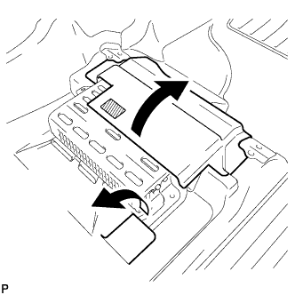
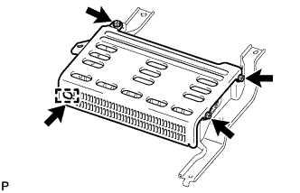
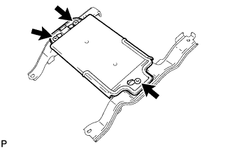

КОМПОНЕНТНЫЙ СТЕРЕОУСИЛИТЕЛЬ > СНЯТИЕ |
| 1. ОТСОЕДИНИТЕ ПРОВОД ОТ ОТРИЦАТЕЛЬНОГО ВЫВОДА АККУМУЛЯТОРНОЙ БАТАРЕИ |
| 2. СНИМИТЕ ПРАВОЕ ПЕРЕДНЕЕ СИДЕНЬЕ В СБОРЕ |
Для сидений с ручным приводом:
Снимите правое переднее сиденье в сборе (Нажмите здесь).
Для сидений с электроприводом:
Снимите правое переднее сиденье в сборе (Нажмите здесь).
Для сидений с функцией облегчения посадки "Walk In":
Снимите правое переднее сиденье в сборе (Нажмите здесь).
| 3. СНИМИТЕ КОМПОНЕНТНЫЙ СТЕРЕОУСИЛИТЕЛЬ С КРОНШТЕЙНОМ В СБОРЕ |
|  |
Отсоедините крепление и отогните напольные коврики в направлениях, указанных стрелками.
Отсоедините 4 разъема.
Выверните 3 болта и снимите усилитель с кронштейном.
| *A | для моделей производства Pioneer | *B | для моделей производства JBL |
| 4. СНИМИТЕ КРЫШКУ УСИЛИТЕЛЯ |
|  |
Выверните 3 болта, снимите фиксатор и крышку усилителя.
| 5. СНИМИТЕ КРЫШКУ УСИЛИТЕЛЯ № 2 (для моделей с 14 динамиками) |
|  |
Расцепите 3 фиксатора и снимите крышку.
| 6. СНИМИТЕ КРОНШТЕЙН УСИЛИТЕЛЯ № 1 |
Выверните 2 винта и снимите кронштейн.
| *A | для моделей производства Pioneer | *B | для моделей производства JBL |
| 7. СНИМИТЕ КРОНШТЕЙН УСИЛИТЕЛЯ № 2 |
Выверните 2 винта и снимите кронштейн.
| *A | для моделей производства Pioneer | *B | для моделей производства JBL |